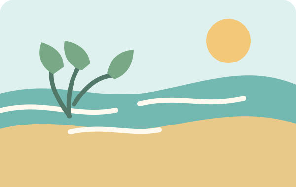
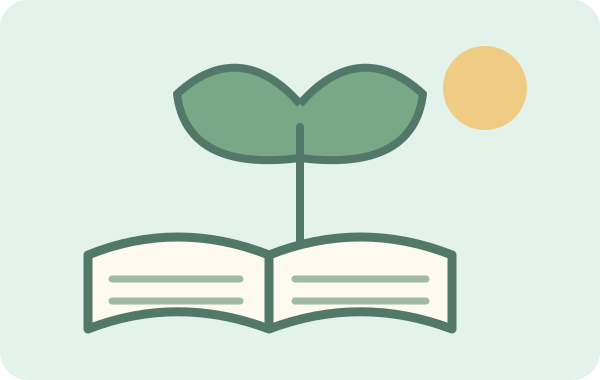

CERITA DALAM GAMBAR
Galeri jelajah
Kumpulan momen dan inspirasi dari kegiatan Klub Jelajah.


Setiap pengamatan punya cerita.
Pilih satu hal kecil di sekitarmu. Gambar, tulis, atau ceritakan apa yang kamu temukan.
Lihat kegiatan klub